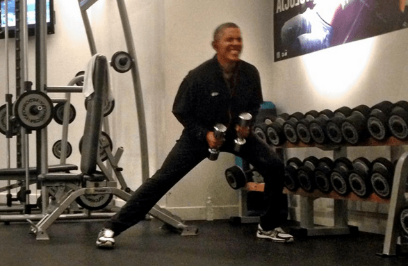
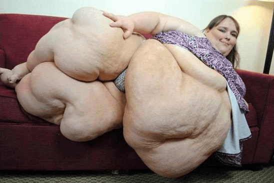
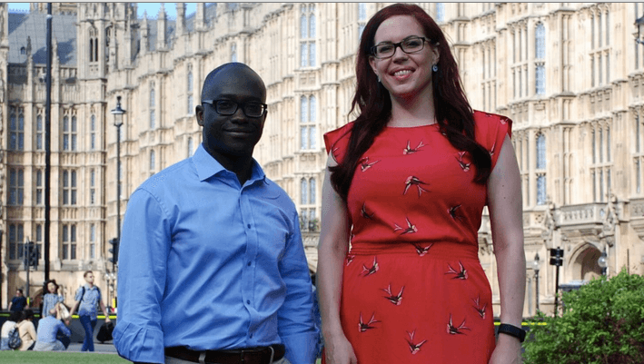

< < < Back
Feminist Mental Health Czar Wants To Curtail Boys’ Access To Gyms In Britain – Return Of Kings
A woman named Natasha Devon has written a piece in the Daily Telegraph demanding that boys under 16 be banned from attending gyms alone, to prevent them from becoming too concerned about developing muscles. Devon, who is the Derpartment for Education’s “mental health champion” is asking for a “strict and rigorously enforced” age limit of 16 on access to gyms, unless accompanied by an adult.
Devon is a professional victim who has built two charities and wrangled herself an MBE out of the fact she once had an eating disorder. She was formerly a typist for Cosmopolitan and has zero qualifications in medicine or psychiatry. The ascendancy of pundit-turned-government advisor Devon suggests the British government is pursuing a policy of handing out appointments and honours to complete non-entities in order to appeal to feminist sensibilities.
The continuing assault on male spaces
The projected Feminist prototype of the male gym-user.
Although traditionally associated with the right wing of the British press, The Telegraph has a long tradition of giving feminists a platform to spout biased garbage.
The catalytic incident which led Devon to call for the ban of children (read: boys) under 16 from gyms has no bearing the matter she purports to discuss. Devon recounts being shown some dodgy exercise by a guy in the gym. She then says she is concerned because gyms are places where peer-to-peer advice-giving. There follows, she alleges, “a wider social significance, particularly for young men.”
So let’s recap. A man gave our “tsar” dodgy advice in the gym. Gyms are places where peer-to-peer advice is given. Teenage boys join a gym between 13 and 14 years of age. This, apparently, is a valid basis for inferring that a problem exists. Logic and reason 101 it isn’t. She continues:
Ostensibly, there’s nothing much wrong with this. It’s incredibly difficult to be a young man in today’s society. The increasing prevalence of mum-only one-parent families, plus the relative dearth of male teachers, has left many teenage boys without real-life role models. Aspects of the new wave of feminist thinking in our culture have also meant a lot of young men are struggling to find a sense of identity.
…
All of these needs can be fulfilled somewhat by the gym. It’s a testosterone-fuelled space where teenage boys can find older men who will instruct and induct them into the ways of fitness culture. It’s little wonder they’re seeking gym memberships in their droves.
That’s right, folks. It’s difficult to be a boy because feminists have made any semblance of male identity anathema, unless regulated and controlled by feminists. Going to the gym has become an escape from this, because boys flock there to gain the tutelage of older, more established men.
Natasha Devon, in case you were wondering
Nevertheless, Devon demands that all gyms ban boys under 16 unless accompanied by an adult. Her “reasons” are as follows:
Firstly, it’s because young men are vulnerable and dangers lurk beneath the gym’s friendly edifice.
These dangers are, and I’ll spare you the direct quote, that personal trainers might push energy drinks and protein shakes onto gym users. The implicit argument is that young boys might be subject to this “up sell”, as Devon calls it. Never mind that every one of these products is available to children on high street shelves. The feminist solution to this imaginary problem is, unsurprisingly, government regulation.
Secondly, there’s the potential for distorted body image.
Devon claims that the rise in male hospitalisations for eating disorders by 70 per cent over the last decade is connected to what she purports to be the mainstreaming of gyms. No attempt to establish correlation between the two is made whatsoever. It just “feels” right, right?
The third argument, and one which is utterly bizarre in its lack of logic, is that:
…gyms are currently providing a need which should be being met elsewhere in the community.
Her point is that schools have insufficient PE lessons. Which is of course, an invalid argument for the limiting of access to gyms, even for children. It’s a very reasonable argument in favour of having more sports in schools. To cite a lack of sports in schools as a reason to restrict gyms, however, is putting the cart before the horse. Czar-level reasoning is obviously at play.
When chancers blag their way into high office

Although Natasha claims that she has “the critical faculty to question the more dodgy aspects of gym culture,” reading her article provides ample evidence of a worrying lack of critical or other faculties. The article is more an exercise in concern-trolling than it is rational inquiry.
No evidence at all is brought forward to show why it is that gyms are so bad for young boys. No evidence is shown to ground the numerous claims of causation made between gym-going, eating disorders in men, and the trade in and consumption of supplements. Devon’s written argument is typically millennial: unrigorous and unreferenced.
It is almost as if this “advocate” is trying to concoct a basis for a policy out of thin air. Almost as if she is working backwards from a conclusion, that it is bad for young men to be in the gym, that they are exposed to a culture which is, well, male, and therefore bad. Although Devon pays lip service, as feminists are wont to do, to the troubles facing men in modernity, she is herself part of the same misandrist impulse to regulate and curtail male behaviour.
Devon, as a feminist, feels threatened by men having their own spaces. The British pub has been decimated thanks to the smoking ban and alcohol taxes. Men are now finding new spaces to commune and communicate, away from the meddlesome influence of women. Feminsts are reacting by attempting to control and regulate those spaces in any way, and under any pretext they can.
Devon’s concern is really that boys in gyms might be exposed not only to the rigours of strength training, but also to a little too much masculine thought. Catch them young, as they say.
Britain, a casino for grievance-mongers
Health at every size, you see.
The real scandal here is that a professional victim, Natasha Devon, who has no medical or psychiatric qualifications, has been appointed at taxpayer’s expense to lecture people on children’s mental health.
Not only has the government been conned by this individual, her appointment could be positively detrimental to the health of British children. Devon and her troupe are practitioners of the extremist ideology of “health at every size” (HAES), which teaches fat people that being fat is perfectly OK and something they should be happy about.
Aside from this, even the very notion of “self-esteem,” another idea which Devon promotes, is a harmful poison which should have no place in schools. Advocates of “self-esteem” promote the idea that confidence is something that one is entitled to, rather than what one earns through hard work and accomplishment.
After decades of conditioning and exposure to culture, British kids are full of it. Scratch the surface and they know nothing. But they’re ready to stab you for stepping on their trainers. Snake oil sales(wo)men like Natasha Devon will only promote and encourage this.
Government non-jobs for all
Natasha Devon and the doughy mangina who appointed her.
The Cameron regime is obsessed with ingratiating itself to various grievance lobbies by making politically correct gestures. Appointing a woman here, an ethnic minority there. I have already written about the utterly unmeritorious degradation of the Honours system by awarding the OBE to professional victim Caroline Criado-Perez.
Natasha Devon got her MBE in the very same intake, which speaks volumes to the government’s philosophy. Countless nameless individuals, be they police officers, nurses, doctors or firemen, might have been more deserving of honours than these chancers. For the money spent appointing Natasha Devon as a “mental health champion,” the government might have appointed a real expert to the role, at least one with a modicum of capacity to egnage in rational analysis.
In modern Britain, appointments and honours are not given on merit. They are given to whoever has the greatest excess of chutzpah and talent for shameless self-promotion. Even an abject lack of qualifications does not stop you from becoming a Tsar or champion for this or that cause.
The most worrying aspect of this is that under such a porous system, where influence is given whoever has the sharpest elbows, feminist creeps like Natasha Devon now have access to your children.
Read More: How I Avoided A False Domestic Abuse Charge


{kind=link}
{kind=link}
{kind=link}
{kind=link}